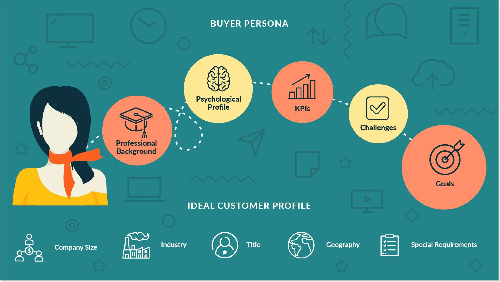
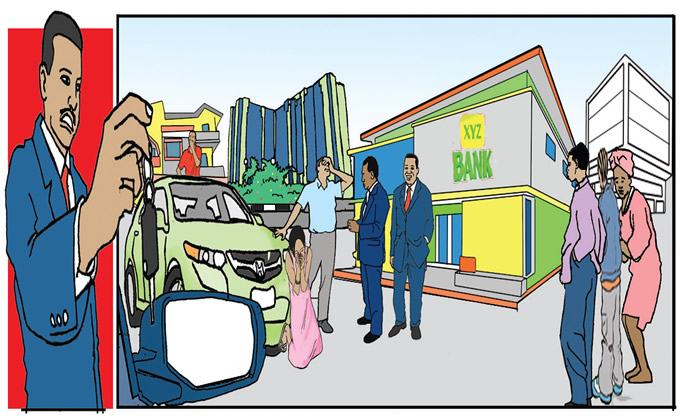
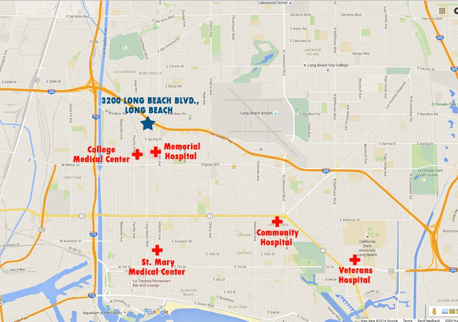

Diabetes mellitus is a major chronic disease that results in readmissions due to poor disease management .In this project, we developed and compared various machine learning (ML) based models for predicting the likelihood of readmission among patients with diabetes.

In this project, We identified and analyzed customer behavior patterns based on RFM metrics, resulting in the identification of distinct customer segments. This can be used to develop targeted marketing campaigns and promotions for each segment.

In this project, we utilized machine learning algorithms, such as logistic regression, decision trees and random forest to predict the likelihood of car loan default. We attained an accuracy rate of 83%.

Built a recommendation engine that recommends the closest hospital to the user based on their location.